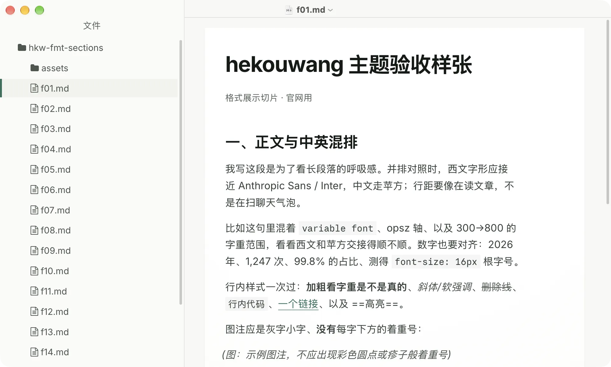
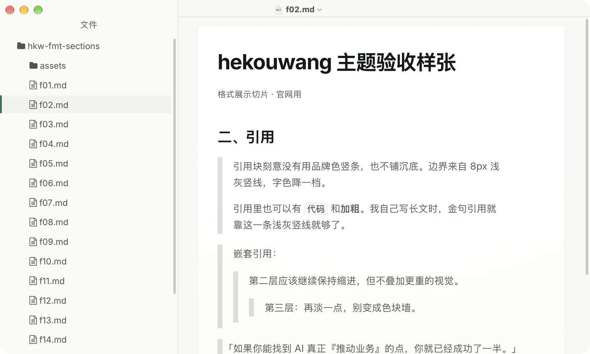
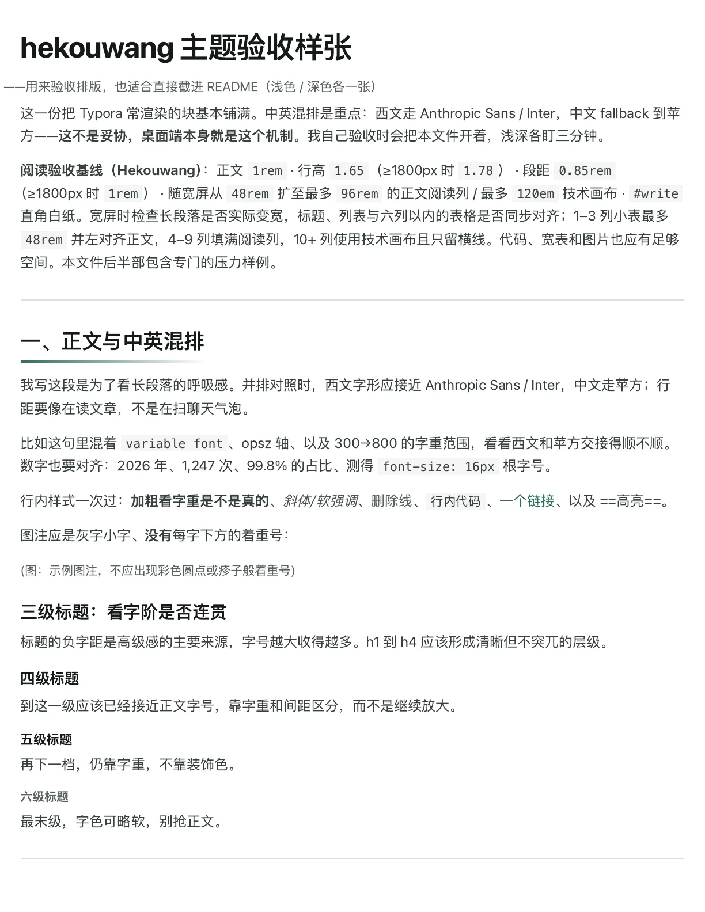
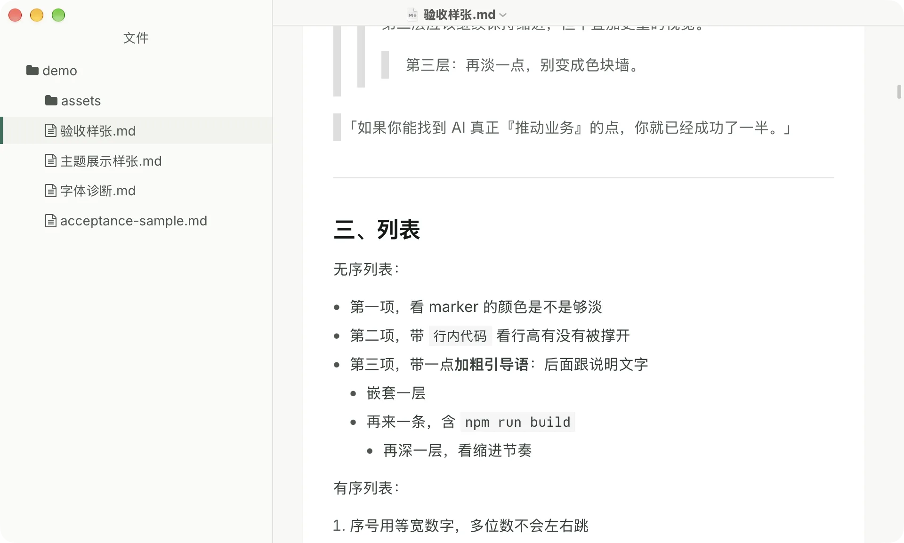
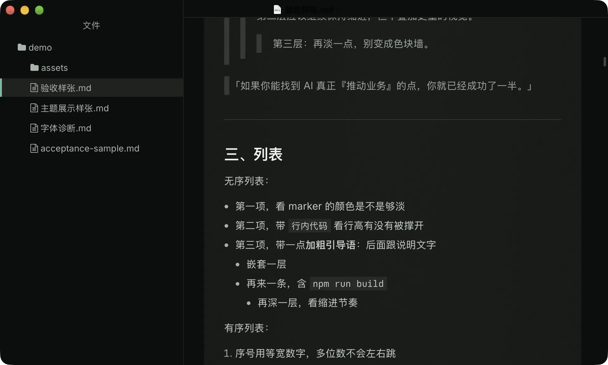

01 · METRICS
中文长文阅读指标
正文 1rem、行高 1.65；段落与标题居中落在「窗口 − 16rem」的阅读列（48–96rem）。纸面比阅读列宽 6rem，专供代码与宽表——松而不散。
会勇禾口王
Typora · 中文长文阅读主题
不追求像海报。正文 1rem · 行高 1.65 · 居中 48–96rem 阅读列 · 纸面随窗口铺满——从开头读到结尾，节奏一直安静清楚。
WHY IT MATTERS
长时间读写 Markdown 时，标题、段落、代码、表格与图片应保持同一种节奏，而不是各自争夺注意力。以下为产品固定下来的体验决策。
01 · METRICS
正文 1rem、行高 1.65；段落与标题居中落在「窗口 − 16rem」的阅读列（48–96rem）。纸面比阅读列宽 6rem，专供代码与宽表——松而不散。
02 · HIERARCHY
标题靠字号、字重与留白建立秩序；代码、引用、表格各有边界，却不会把文章切成一堆卡片。
03 · FULL BLEED
隐藏文件树后，纸边、gutter 与投影一起消失，白纸铺满内容区；正文仍稳在阅读列里。
04 · ONE EXPERIENCE
常规窗口保留纸感壳层；源码与专注模式各自照顾图片、任务框与代码。导出 PDF 先压平浮层，再走排版精装——不是截一张编辑器图。
05 · CJK
西文随包 Inter（OFL），中文使用系统字体；不捆绑大型中文字体，也守住授权边界。Windows 另有独立字栈与 ClearType 适配。
06 · COMPLETE FREE
免费版功能完整。专业版解锁六套独立色彩、材质与标题工艺；与免费版共享同一套阅读指标。
16 FORMATS
验收样张铺满 16 类块：正文混排、引用、列表、代码、表格、公式、Mermaid、Callout…… 自动轮播真机截图，说明主题价值不在换肤，而在每一种格式都清楚可读。


01 · 正文与中英混排
EXPORT · PDF
多数主题把编辑器纸感原样带进 PDF，结果是外圈底色 + 中间白柱。 本主题对免费与专业共 14 套皮肤共用导出规则：整页画布同色，拆掉浮卡片，再做块级精装。 样张用验收文档铺满标题、引用、列表、代码与表格——Markdown 常见格式导出后仍然清楚。

VERSIONS
免费 V2 已是完整长文阅读主题。专业版买断解锁 V1 / V2 Pro / V3–V6（各含浅深，12 CSS）—— V2 Pro ≠ 免费 V2，不同菜单项与 CSS。
FREE · MIT
skill V2 · 日常写作、通用长文
PRO · ¥9.9 买断
同一阅读指标 · 换色板与标题工艺


INSTALL
装完必须 Cmd+Q 完全退出 Typora 再开，主题菜单才会刷新。
# clone & install $ git clone https://github.com/huiyonghkw/hekouwang-typora-theme-lite-skill.git $ cd hekouwang-typora-theme-lite-skill && ./scripts/install.sh # 选 Hekouwang / Hekouwang Dark
Windows 用仓库内 install-windows.ps1。也可只拷 theme/hekouwang*.css 与 theme/hekouwang/。
应有 unlock.sh、theme/（12 CSS）、LICENSE-PRO.txt。
包内 ./unlock.sh，或公开仓 ./scripts/unlock.sh 包.zip。
菜单选 Hekouwang V1 / V2 Pro / V3–V6（或 Dark）。
BUY · SKILLPAY
免费已经够写长文。买断是为了在技术文档、典藏随笔、财经复盘、玻璃轻文档、HUD 方案稿与焰彩手稿之间切换——不必重学排版。
支付宝 SkillPay 履约 · 商品名「会勇禾口王 · Typora 主题工程」
七天无理由退款 · 免费 MIT · 专业版 LICENSE-PRO
售后：huiyonghkw@gmail.com